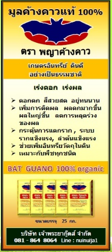

จำหน่ายมูลค้างคาวแท้ 100%
กระสอบละ 300 บาท (25 กก.) (เฉลี่ยกิโลกรัมละ 12 บาท)สอบถามโทร : 081 - 8648064
LINE : nuinuija1 ติดต่อ คุณนุ้ย
การส่งสินค้า
1. จำนวน 1-10 กระสอบ ใช้บริการ NTC ดอนเมืองเช็คพื้นที่ให้บริการที่ link นี้ได้เลยค่ะ มีภาคเหนือ อีสาน ตะวันออกค่ะ
ค่าส่งโทรเช็คได้ที่เบอร์ NTC นะคะ 025237042-6 คิดค่าส่งตามจริง
2. สั่งจำนวน 10 กระสอบขึ้นไป สอบถามค่าส่งได้ที่ 081 8648064
3. สั่งจำนวน 4 ตันขึ้นไป ราคาพิเศษ พร้อมส่งฟรี (บางจังหวัด) สอบถามได้ที่ 081 8648064
จุดจำหน่ายมูลค้างคาว ตามจังหวัดต่างๆ
1.อ.เมือง จ.ปทุมธานี 08186480642.ร้านลุงโต้ง บางบัวทอง ร้านต้นไม้ติดถนนใหญ่ กาญจนาภิเษก
3.ร้านรุ่งเจริญการเกษตร อ.ดำเนินสะดวก จ.ราชบุรี โทร. 086-8904999
4.ร้านมหาชนฅนเกษตร อ.เมือง จ.สระบุรี ถนนพิชัยรณรงค์สงคราม หน้า สนง. เกษตรอำเภอเมือง สระบุรี
5.จ.ลพบุรี คุณนา 081 3308890
6.จ.สุรินทร์ คุณสุระ 0985850817
7.ร้านขายมูลสัตว์ นนทบุรี ถนน 1009 ต.บ้านใหม่ อ.บางใหญ่ 086-886 8425
8.ร้านศรทอง 2005 อ.ไทรน้อย จ.นนทบุรี 081-3130357 089-1204515